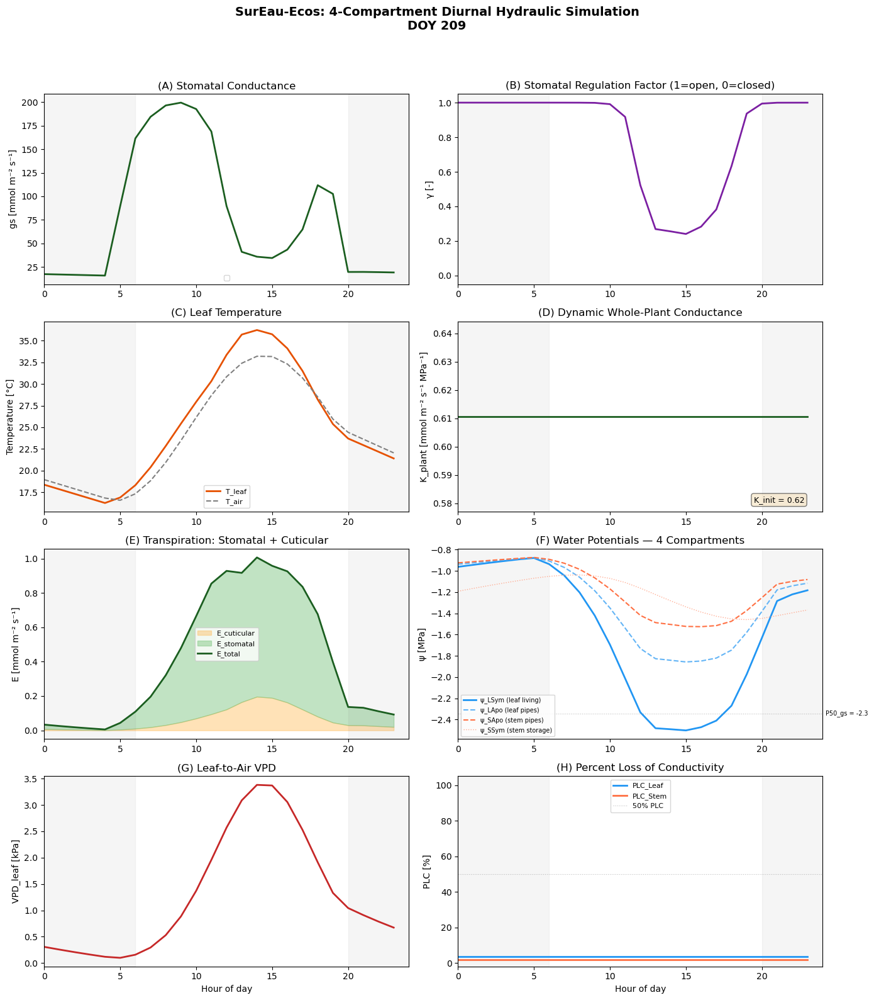

from plotnine import *
import numpy as np, pandas as pd
from itables import to_html_datatable
from IPython.display import HTML, displayTutorial 5: SurEau-Medlyn Basic run
Load modules
from plant_hydraulics.run_sureau import run_sureau
from plant_hydraulics.sureau_climate import *
from plant_hydraulics.utils import potential_PAR
from plant_hydraulics.parameter_classes import (
SurEauVegetationParams,
SurEauSoilParams,
SurEauModelOptions,
)
from plant_hydraulics.utils import (
load_example_data,
)Object initialization
# Model options
opts = SurEauModelOptions(
# Richmond
latitude=-33.5996,
# ← metres above sea level
elevation = 24,
# net radiation model: "Linacre" (only option currently)
Rn_formulation="Linacre",
# PET model: "PT" (Priestley-Taylor) or "PM" (Penman-Monteith)
ETP_formulation="PM",
# True → forces a fixed doy=116 (sunny day template)
constant_climate = False,
# which hours to output (0–23 → full day)
time_steps=np.arange(24),
# Print progress to console
print_progress=True,
year_start=2016,
year_end=2016
)# Vegetation parameters
veg_params = SurEauVegetationParams()# Leaf area index (m²/m²). Higher = more transpiration.
veg_params.LAI_max = 4.5
veg_params.foliage = "Evergreen"
veg_params.transpiration_model = "Medlyn"
# Params from Drake
veg_params.vcmax25 = 34
veg_params.vcmaxha = 51780
veg_params.vcmaxhd = 2e5
veg_params.vcmaxse = 640
veg_params.jmax25 = 60
veg_params.jmaxha = 21640
veg_params.jmaxhd = 2e5
veg_params.jmaxse = 633
veg_params.g1_medlyn = 2.9
veg_params.g0_medlyn = 0.003
# ψ at 50% loss of leaf conductance (MPa)
veg_params.P50_VC_leaf = -3.4
# ψ at 50% loss of stem conductance (MPa)
veg_params.P50_VC_stem = -3.4
# Steepness of vulnerability sigmoid (%/MPa)
veg_params.slope_VC_leaf = 60
# ψ at 12% stomatal closure (MPa)
veg_params.P12_gs = -2.07
# ψ at 88% stomatal closure (MPa)
veg_params.P88_gs = -2.62
# Whole-plant conductance (mmol/m²/s/MPa)
veg_params.k_plant_init = 0.62
# At 20°C (mmol/m²/s)
veg_params.gmin20 = 4.0
# Temperature where cuticle melts (°C)
veg_params.TPhase_gmin = 37.5
# Q10 above TPhase
veg_params.Q10_2_gmin = 4.8soil_params = SurEauSoilParams()Climate
SurEau takes daily climatic data and then creates a hourly dataset
print(climate_df[["DATE", "DOY"]].to_string()) DATE DOY
0 2016-10-31 305
1 2016-11-01 306
2 2016-11-02 307
3 2016-11-03 308climate_df = load_example_data("sureau_medlyn_daily_climate.csv", sep=",")
html_str = to_html_datatable(climate_df)
display(HTML(html_str))| Loading ITables v2.8.1 from the internet... (need help?) |
Explore climatic data
hourly_data_from_daily = []
for each_day in range(len(climate_df)):
# Get date
date_str = str(climate_df.iloc[each_day]["DATE"])
# Calculate climate for that day
clim = new_climate_day(climate_df, date_str)
# Compute PET for that day
clim = compute_Rn_and_ETP(clim, veg_params, opts)
# Create hourly climate from daily conditions
ch = new_climate_hourly(clim, opts, veg_params)
#Show data in ch
#print("ch.__dict__ keys:", list(vars(ch).keys()))
# Put everything into frame that works for Sureau
hourly_data_from_daily.append(pd.DataFrame({
"Doy": int(climate_df.iloc[each_day]["DOY"]),
"hour": np.asarray(ch.time, float),
"RG": np.asarray(ch.RG, float),
"RH": np.asarray(ch.RH_air_mean, float),
"PAR_d": np.asarray(ch.PAR, float),
"Tair_d": np.asarray(ch.T_air_mean, float),
"VPD_d": np.asarray(ch.VPD, float),
}))
hourly_data_from_daily = pd.concat(hourly_data_from_daily, ignore_index=True)ETP_formulation is PM
Remember to adjust the lat/lon
ETP_formulation is PM
Remember to adjust the lat/lon
ETP_formulation is PM
Remember to adjust the lat/lon
ETP_formulation is PM
Remember to adjust the lat/lonRun the model
results = run_sureau(
climate_df=climate_df,
veg_params=veg_params,
soil_params=soil_params,
opts=opts,
# Set True to keep deepest layer at field capacity
deep_water=True,
)Year 2016 Day 305ETP_formulation is PM
Remember to adjust the lat/lon
Year 2016 Day 11ETP_formulation is PM
Remember to adjust the lat/lon
Year 2016 Day 42ETP_formulation is PM
Remember to adjust the lat/lon
Year 2016 Day 71ETP_formulation is PM
Remember to adjust the lat/lon
Year 2016 complete. Plot results
target_doy = 209
day = results[results["doy"] == target_doy].copy()
hours = day["time"].values
print(f" Plotting DOY {target_doy} (July 28, 1990)")
print(f" Hours available: {len(hours)}")
print(f" Min ψ_LSym this day: {day['psi_LSym'].min():.3f} MPa")
print(f" Min regul_fact: {day['regul_fact'].min():.3f}")
# ── Colour scheme ────────────────────────────────────────────────────────
c_LSym = '#2196F3' # blue — leaf symplasm (living cells)
c_LApo = '#64B5F6' # light blue — leaf apoplasm (xylem pipes)
c_SApo = '#FF7043' # orange — stem apoplasm (trunk pipes)
c_SSym = '#FFAB91' # light orange — stem symplasm (trunk storage)
c_total = '#1B5E20' # dark green — total / canopy-level
def shade_night(ax):
"""Gray shading for nighttime hours (before sunrise, after sunset)."""
ax.axvspan(0, 6, alpha=0.08, color='gray')
ax.axvspan(20, 24, alpha=0.08, color='gray')
# ── Create the figure ────────────────────────────────────────────────────
fig, axes = plt.subplots(4, 2, figsize=(14, 16))
fig.suptitle('SurEau-Ecos: 4-Compartment Diurnal Hydraulic Simulation\n'
f'DOY {target_doy}',
fontsize=14, fontweight='bold', y=0.99)
# ── (A) Stomatal Conductance ─────────────────────────────────────────────
# Shows gs_lim (water-limited, solid) vs gs_bound/γ (unstressed, dashed).
# The gap between curves = water stress cost.
ax = axes[0, 0]
gs_regulated = day['gs_lim'].values
#gs_unstressed = gs_regulated / (day['regul_fact'].values + 1e-10)
#ax.fill_between(hours, gs_regulated, gs_unstressed, alpha=0.15, color=c_total)
ax.plot(hours, gs_regulated, color=c_total, lw=2)
#ax.plot(hours, gs_unstressed, color=c_total, lw=1, ls='--', alpha=0.5,
# label='gs (unstressed)')
shade_night(ax)
ax.set_ylabel('gs [mmol m⁻² s⁻¹]')
ax.set_title('(A) Stomatal Conductance')
ax.legend(fontsize=8)
ax.set_xlim(0, 24)
# ── (B) Stomatal Regulation Factor ───────────────────────────────────────
# γ = 1 → stomata fully open. γ = 0 → fully closed.
# Driven by the sigmoid (Eq. 34) applied to ψ_LSym.
ax = axes[0, 1]
ax.plot(hours, day['regul_fact'].values, color='#7B1FA2', lw=2)
shade_night(ax)
ax.set_ylabel('γ [-]')
ax.set_title('(B) Stomatal Regulation Factor (1=open, 0=closed)')
ax.set_ylim(-0.05, 1.05)
ax.set_xlim(0, 24)
# ── (C) Leaf Temperature ────────────────────────────────────────────────
# T_leaf > T_air when stomata close (less transpirational cooling).
# Energy balance: Penman-Monteith linearization (compute_T_leaf).
ax = axes[1, 0]
ax.plot(hours, day['leaf_temperature'].values, color='#E65100', lw=2, label='T_leaf')
ax.plot(hours, day['T_air'].values, color='gray', lw=1.5, ls='--', label='T_air')
shade_night(ax)
ax.set_ylabel('Temperature [°C]')
ax.set_title('(C) Leaf Temperature')
ax.legend(fontsize=8)
ax.set_xlim(0, 24)
# ── (D) Dynamic Whole-Plant Conductance ──────────────────────────────────
# K_plant = 1/(1/Σk_root + 1/k_stem-leaf + 1/k_leaf-sym) (Eq. 13).
# Decreases as PLC increases from cavitation.
ax = axes[1, 1]
ax.plot(hours, day['k_plant'].values, color=c_total, lw=2)
shade_night(ax)
ax.set_ylabel('K_plant [mmol m⁻² s⁻¹ MPa⁻¹]')
ax.set_title('(D) Dynamic Whole-Plant Conductance')
ax.text(0.95, 0.05, f'K_init = {veg_params.k_plant_init}',
transform=ax.transAxes, ha='right', fontsize=9,
bbox=dict(boxstyle='round', facecolor='wheat', alpha=0.5))
ax.set_xlim(0, 24)
# ── (E) Transpiration: Stomatal + Cuticular ──────────────────────────────
# E_total = E_lim (stomatal, green) + E_min (cuticular, orange).
# Cuticular transpiration is the "unstoppable leak" that drives mortality.
ax = axes[2, 0]
E_cuticular = day['E_min'].values
E_total = day['E_lim'].values + E_cuticular
ax.fill_between(hours, 0, E_cuticular, alpha=0.4, color='#FFB74D', label='E_cuticular')
ax.fill_between(hours, E_cuticular, E_total, alpha=0.4, color='#66BB6A', label='E_stomatal')
ax.plot(hours, E_total, color=c_total, lw=2, label='E_total')
shade_night(ax)
ax.set_ylabel('E [mmol m⁻² s⁻¹]')
ax.set_title('(E) Transpiration: Stomatal + Cuticular')
ax.legend(fontsize=8)
ax.set_xlim(0, 24)
# ── (F) Water Potentials — 4 Compartments ────────────────────────────────
# The heart of SurEau: 4 interconnected water tanks.
# ψ_LSym (blue) — leaf living cells. Drops most (transpiration pulls here).
# ψ_LApo (light blue) — leaf xylem pipes. Follows ψ_LSym closely.
# ψ_SApo (orange) — stem pipes. Drops less (buffered by stem storage).
# ψ_SSym (light orange) — stem storage. Most buffered of all.
ax = axes[2, 1]
ax.plot(hours, day['psi_LSym'].values, color=c_LSym, lw=2,
label='ψ_LSym (leaf living)')
ax.plot(hours, day['psi_LApo'].values, color=c_LApo, lw=1.5, ls='--',
label='ψ_LApo (leaf pipes)')
ax.plot(hours, day['psi_SApo'].values, color=c_SApo, lw=1.5, ls='--',
label='ψ_SApo (stem pipes)')
ax.plot(hours, day['psi_SSym'].values, color=c_SSym, lw=1, ls=':',
label='ψ_SSym (stem storage)')
# Mark P50_gs (midpoint of stomatal closure)
P50_gs = (veg_params.P12_gs + veg_params.P88_gs) / 2
ax.axhline(P50_gs, color='gray', ls=':', lw=0.8, alpha=0.5)
ax.text(24.2, P50_gs, f'P50_gs = {P50_gs:.1f}', fontsize=7, va='center')
shade_night(ax)
ax.set_ylabel('ψ [MPa]')
ax.set_title('(F) Water Potentials — 4 Compartments')
ax.legend(fontsize=7, loc='lower left')
ax.set_xlim(0, 24)
# ── (G) Leaf-to-Air VPD ─────────────────────────────────────────────────
# The driving force for transpiration. Includes Kelvin equation
# correction for reduced water activity at negative ψ.
ax = axes[3, 0]
ax.plot(hours, day['VPD'].values, color='#C62828', lw=2)
shade_night(ax)
ax.set_ylabel('VPD_leaf [kPa]')
ax.set_title('(G) Leaf-to-Air VPD')
ax.set_xlabel('Hour of day')
ax.set_xlim(0, 24)
# ── (H) Percent Loss of Conductivity ────────────────────────────────────
# PLC from the sigmoidal vulnerability curve (Eq. 15).
# Irreversible: once pipes burst, they stay broken.
# Low PLC (~2%) here because ψ_LApo stays well above P50_VC (-3.4 MPa).
ax = axes[3, 1]
ax.plot(hours, day['PLC_leaf'].values, color=c_LSym, lw=2, label='PLC_Leaf')
ax.plot(hours, day['PLC_stem'].values, color=c_SApo, lw=2, label='PLC_Stem')
ax.axhline(50, color='gray', ls=':', lw=0.8, alpha=0.5, label='50% PLC')
shade_night(ax)
ax.set_ylabel('PLC [%]')
ax.set_title('(H) Percent Loss of Conductivity')
ax.legend(fontsize=8)
ax.set_ylim(-2, 105)
ax.set_xlabel('Hour of day')
ax.set_xlim(0, 24)
plt.tight_layout(rect=[0, 0, 1, 0.96]) Plotting DOY 209 (July 28, 1990)
Hours available: 24
Min ψ_LSym this day: -2.503 MPa
Min regul_fact: 0.241/tmp/ipykernel_85532/4151902588.py:43: UserWarning: No artists with labels found to put in legend. Note that artists whose label start with an underscore are ignored when legend() is called with no argument.
ax.legend(fontsize=8)